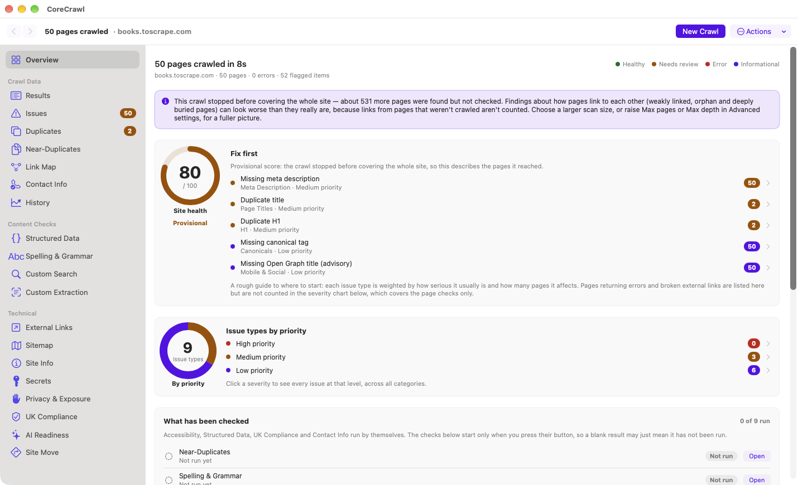
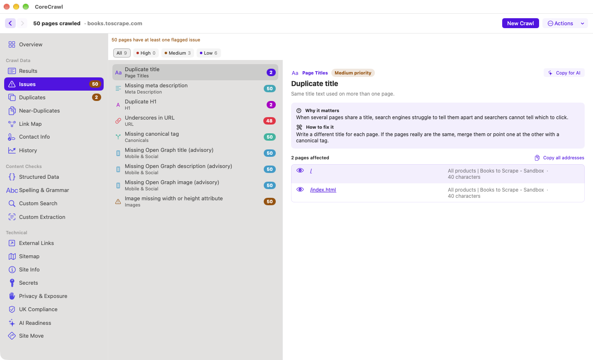

Website audits for your Mac. Free and private.
CoreCrawl crawls your website and shows you what's broken, missing or holding it back in search — broken links, redirect chains, missing titles, repeated titles and descriptions, indexing problems and more. It all runs on your Mac. No account, no subscription, nothing locked behind a paywall.
Version 2.25.5 · macOS 13 or later · Apple silicon Macs · 13 MB
This app has not been notarised by Apple, so macOS asks you to approve the first launch. The included guide shows the steps.

Why I made it
I made CoreCrawl because I was frustrated with so many other apps out there just not having the features I wanted at the price I wanted them at.. that being FREE! Some website audit tools wanted money for the genuinely useful parts, and others were too complicated for a beginner to get anywhere with. I wanted something free that anyone running a website could pick up and understand.
— Gordon, Tech Reality
Know what's wrong, and where to start
Most audit tools hand you a spreadsheet. CoreCrawl tells you what matters first.
A health score and a "Fix first" list
Every crawl ends with a score out of 100 and the five problems worth tackling first, ranked by how serious they usually are and how many pages they touch. Click one to see exactly which pages.
Your results never leave your Mac
The crawl, the analysis and your results all stay on your computer. CoreCrawl only contacts the website you ask it to audit, plus the links and images on its pages to check they work, and any optional checks or page previews you choose. No sign-up, no cloud, no analytics.
Every finding explains itself
Each issue says what it means, why it matters and which pages are affected — written for people who run websites, not just for specialists.
Watch it work
While CoreCrawl scans, the Overview fills in as it goes: a chart of how the pages are turning out, running counts of broken pages and missing or repeated titles and descriptions, and a progress bar. No staring at a spinner.
See how your site fits together
An interactive link map shows every page, ring by ring from the homepage. Spotlight the pages with problems, search for a page, click one to see the route a visitor would take, and save the map as a picture to share.
What it checks
Over 40 checks across the things that most often hold a site back.
Links and status
- Broken pages and server errors
- Broken external links
- Broken and oversized images
- Redirect chains, loops and meta refreshes
- Links that point at redirecting addresses
Page basics
- Missing, long, short or duplicate titles
- Meta descriptions
- Headings (H1)
- Awkward URLs
- Why each issue matters and how to fix it
Search and indexing
- noindex and nofollow pages
- Canonical tags
- Hreflang and pagination
- Sitemap compared with what was crawled
- AI crawler access and llms.txt
Content
- Repeated titles and descriptions
- Near-duplicate page text
- Spelling and grammar
- Structured data (schema.org)
- Custom search and data extraction
Site structure
- Pages with few or no links pointing to them, among the pages the crawl reached
- Pages buried deep in the site
- An interactive link map: spotlights, search and a page preview
- Site-move checker for old addresses and redirects
- History: chart your health score across crawls
- Finds Freepost addresses and phone numbers, with a human-vs-automated hint
- Mobile viewport and social-sharing tags
Accessibility, privacy and safety
- Missing image alt text and empty links
- Exposed API keys and secrets, with how to revoke them
- Staging leaks, cookies, trackers and public source maps
- UK cookie-consent and privacy-notice checks
- Files that should never be public (on sites you own)
Every problem, with the pages behind it
Open Issues to see everything found, grouped by type. Pick one to see the affected pages, and click through to inspect any of them.
- Filter, sort and search every crawled page, or narrow to Loads OK, Redirects, Errors, Blocked or pages with issues
- Preview any page beside the results without leaving the app
- Back and forward buttons, so you never lose your place
- Save a crawl and reopen it later
- Compare two crawls to see what was added, removed or changed
- Export to CSV, Excel, JSON or a PDF report

Install in three steps
CoreCrawl is a free app from one person. It hasn't been through Apple's automatic security check for downloaded apps (called notarisation), so macOS asks you to approve it the first time. That's a one-off. To be safe, only download it from this page, and check the checksum below if you like; the licence and what the app contacts are both published (see the questions below).
Download
Download CoreCrawl 2.25.5 and open the file. Drag CoreCrawl into your Applications folder.
Open it
Double-click CoreCrawl. macOS will say it can't verify the app — that's expected. Click Done, not Move to Bin.
Allow it once
Open System Settings › Privacy & Security, scroll down and click Open Anyway (it appears after the first attempt to open the app). The step-by-step guide with pictures shows each click.
Want to see what you get first? Here is an example report (a real audit of a test site, made with an earlier version, so some wording differs), and a one-page quick start.
New to site audits? The CoreCrawl User Guide (PDF, 31 pages) explains every tab, what the messages mean, and what to do about them. It is also included in the download.
Got an idea, or hit a snag? Choose Help › Suggest a Feature or Report a Problem… in the app. It prepares an email to me with your version details, and CoreCrawl never includes the websites you scan.
All downloads are hosted on GitHub. The official download page is the only place to get CoreCrawl from; please share that link rather than the file.
Want to check the download is untouched? Its SHA-256 checksum is in this small file. Run shasum -a 256 CoreCrawl.dmg in Terminal and compare.
Honest about its limits
Who it suits: owners of WordPress, Shopify, Squarespace and similar sites, and anyone who wants plain-English answers on a Mac without setting up a server. Who should choose something else: developers auditing sites that build their pages in the browser (React, Vue), teams who need a shared or scripted crawler, and anyone crawling hundreds of thousands of pages.
CoreCrawl is a focused tool, not everything. Before you download:
- It doesn't run JavaScript. It reads the HTML your server sends, as a search engine's first pass does. Sites that build their pages in the browser may show incomplete results, and CoreCrawl will warn you when it spots this.
- No Google Search Console or Analytics link-up. That's deliberate — it keeps everything on your Mac.
- It has page limits. Quick scan stops at 50 pages, Full site at 1,000 and Large site at 10,000; you can set your own up to 100,000.
- It isn't notarised by Apple, so macOS shows a warning the first time you open it. The download includes a short guide to the two clicks needed, once.
- Apple silicon Macs only (M1 or later), running macOS 13 or newer. There's no Windows or Intel version.
- Audit only sites you own or have permission to crawl. CoreCrawl respects robots.txt by default and is gentle with servers, fetching five pages at a time (ten with the Large site scan) unless you change it.
Questions
Is it really free?
Yes. There's no paid version and no trial, and no feature or page cap is locked behind payment. You choose how many pages to crawl, up to 100,000 — very large crawls limit some content-heavy checks to protect memory, but there's no paid tier to unlock. It's a free tool from Tech Reality. If it saves you time, you can buy me a coffee — completely optional.
Where does my data go?
Your results go nowhere. Crawls, results and saved files stay on your Mac. CoreCrawl only makes requests to the website you're auditing and, after the crawl, to the external addresses that website links to and to each image its pages use (wherever that image is hosted), to check they still work and how big the images are.
A few optional checks make extra requests to the same site: reading its sitemap and script files, looking for public source-map files, reading robots.txt and llms.txt for the AI Readiness check, and, only after you confirm the site is yours, asking for about 40 well-known addresses that should never be public.
The Site Move tab requests the old addresses you type in and follows where each one redirects to, so it may contact those places too.
A further opt-in check, "Check Beyond This Site", contacts the Internet Archive’s Wayback Machine (sending the addresses, with any query strings, of up to 15 crawled pages) and, only if a page references one, a cloud storage service (Amazon S3, Google Cloud Storage or Azure), to see whether an old snapshot still shows something the live page doesn’t, or whether that storage lists its files publicly — again, only after you confirm the site is yours.
CoreCrawl also keeps a small record of scores and counts for each site you crawl, on your Mac, so its History tab can chart progress: no page content, and you can clear it.
Opening a page preview loads that page the way a browser would, running its scripts and the resources it loads from other services, so the site can see a visit and may set temporary cookies; the preview is separate from your own browser and its session is discarded when you close it.
The only other thing CoreCrawl contacts is GitHub, and only when you choose Check for Updates, to ask which version is the latest. Nothing is ever sent to Tech Reality. It has no account system and no analytics.
How do I get updates?
Choose CoreCrawl ▸ Check for Updates… from the menu. If a newer version has been published it tells you what is new and opens the download page in your browser; it never downloads or installs anything by itself and never checks unless you ask. You can also press Watch ▸ Releases on the GitHub download page, or subscribe to its releases feed, and GitHub will tell you about every new version.
Is it safe to install?
It installs like any Mac app and runs in Apple's app sandbox. The warning on first launch appears because the app hasn't been through Apple's automatic security check (notarisation), so macOS can't verify it. It is not a report that anything was found wrong with it. You can verify your download with the checksum in the install section.
Is CoreCrawl a security or malware scanner?
No. The Secrets and Privacy & Exposure tabs look for specific, well-known signs of accidentally exposed information — API keys left in code, staging addresses, public backup files and similar. A clean result there means those particular checks found nothing; it doesn't mean a site is secure, and CoreCrawl shouldn't be treated as a substitute for a proper security audit.
How big a site can it handle?
It's built and tested for sites from a handful of pages up to a few thousand. You can set the limit as high as 100,000 pages, but very large crawls take much longer and use a lot of memory, so some content-heavy checks are limited to protect your Mac. You choose a scan size when you start — a quick sample, the whole site, or a higher limit for large sites — and it tells you when a crawl stopped before covering everything.
Will it slow down my website?
Unlikely: it fetches five pages at a time by default and respects robots.txt, including a requested wait of up to 30 seconds between requests. A small site on shared hosting can still feel it, so you can lower that in Advanced settings.
Why doesn't it show results for my JavaScript-heavy site?
CoreCrawl reads the HTML the server sends and doesn't run scripts, so sites that build their content in the browser can look nearly empty to it. When that's the case it shows a warning on the Overview, so you can tell when a crawl stopped before covering everything.
How do I suggest a feature, report a bug or ask a question?
In the app, choose Help › Suggest a Feature or Report a Problem…, write your message and press Open in my email app (or Copy message and address if you use webmail). It prepares an email to support@tech-reality.co.uk with your CoreCrawl and macOS versions, which you can delete. You can also just email me. Tell me what you did, what you expected and what happened. Please don't send passwords or private website data.
Can I use it on client sites?
Yes. You can use CoreCrawl free of charge for personal, business, agency and client work, as long as you have permission to crawl the sites you audit. The reports and screenshots you make are yours to share.
Who made CoreCrawl, and was AI used?
I designed and directed CoreCrawl, and I test it by hand before each release. It was written with Claude (Anthropic) and reviewed with Codex (OpenAI). I test the app and review its results and wording, alongside automated tests and AI-assisted code reviews. Your results never leave your Mac, whoever wrote the code.
Is it open source? Can I share or sell it?
No. CoreCrawl is free to use but it is copyrighted software, not open source. Nobody may sell it, resell it, bundle it with other software or products, or host copies of the download elsewhere. Please link people to this page instead. The full licence is short and readable.
Enjoying CoreCrawl?
It's free and I keep improving it. If it's saved you time, a coffee helps.
☕ Buy me a coffeeOr see more from Tech Reality on YouTube.